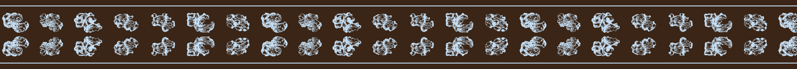
f000 motif features.24__c35 (6 siblings) · stack · gap 0.18 · hair · reverse · f526-c252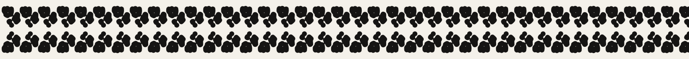
f001 curved band · curved-band-02 · stack · gap -0.18 · none · plain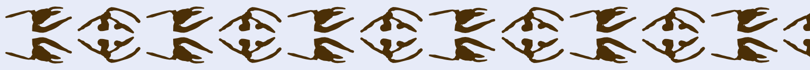
f002 curved branching line · curved-branching-line-05 · stack · gap -0.06 · none · ink · f526-c78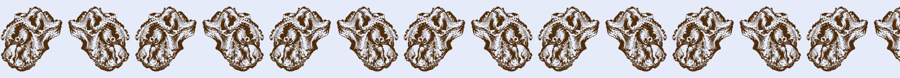
f003 motif features.24__c115 (0 siblings) · mirror · gap 0.06 · none · ink · f55-c33f004 straight comb · straight-comb-05 · glide · gap 0.55 · none · ink · f50-c451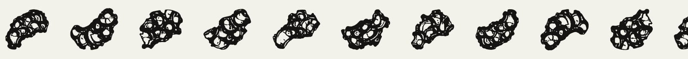
f005 motif features.21__c70 (6 siblings) · turn · gap 0.18 · none · plain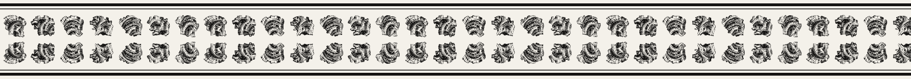
f006 motif features.21__c40 (6 siblings) · stack · gap -0.04 · double · plain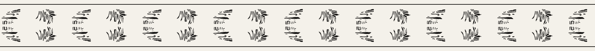
f007 fine crosshatching · fine-crosshatching-08 · stack · gap 0.55 · hair · plain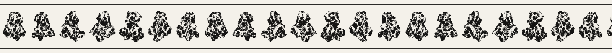
f008 motif features.24__c23 (6 siblings) · mirror · gap -0.04 · hair · plain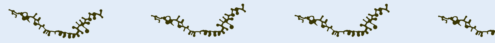
f009 wavy feather · wavy-feather-05 · shift · gap 0.3 · none · ink · f51-c479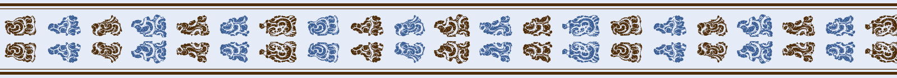
f010 motif features.21__c30 (6 siblings) · stack · gap 0.06 · double · two · f516-c48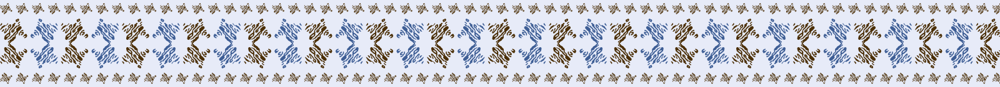
f011 fine hatching · fine-hatching-06 · stack2 · gap 0.12 · counter · two · f526-c78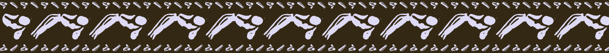
f012 loop · loop-08 · mirror · gap -0.18 · counter · reverse · f515-c115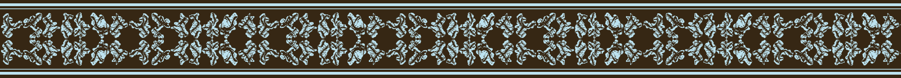
f013 motif features.21__c84 (6 siblings) · stack2 · gap -0.04 · double · reverse · f59-c308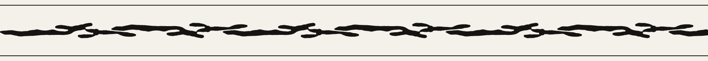
f014 straight sprig · straight-sprig-00 · glide · gap -0.18 · hair · plain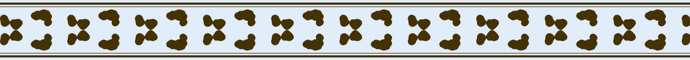
f015 hatched blob · hatched-blob-05 · stack2 · gap 0.3 · double · ink · f70-c290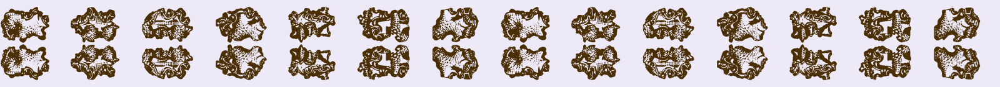
f016 motif features.24__c82 (6 siblings) · stack · gap 0.4 · none · ink · f32-c97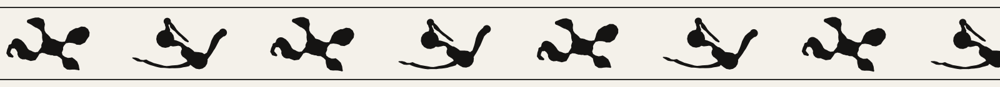
f017 wavy branching line · wavy-branching-line-05 · shift · gap 0.3 · hair · plainf018 motif features.19__c95 (6 siblings) · drift · gap -0.04 · none · two · f12-c108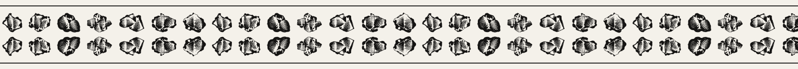
f019 motif features.24__c57 (6 siblings) · stack · gap 0.06 · hair · plain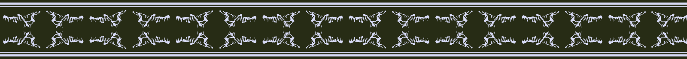
f020 wavy comb · wavy-comb-04 · stack2 · gap 0.0 · double · reverse · f57-c11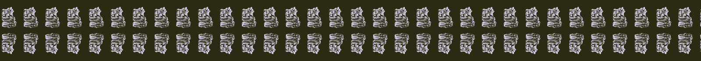
f021 motif features.24__c51 (0 siblings) · stack · gap 0.18 · none · reverse · f524-c480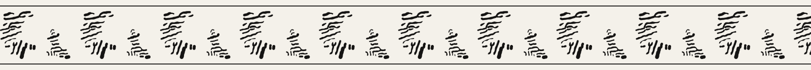
f022 crosshatching · crosshatching-11 · pulse · gap 0.3 · hair · plain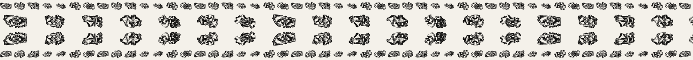
f023 motif features.24__c154 (6 siblings) · stack · gap 0.4 · counter · plain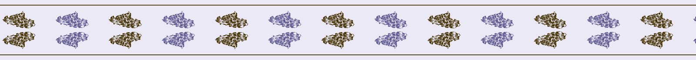
f024 motif features.21__c33 (0 siblings) · stack · gap 0.4 · hair · two · f515-c115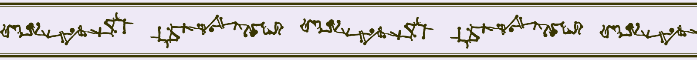
f025 wavy feather · wavy-feather-11 · turn · gap 0.12 · double · ink · f72-c889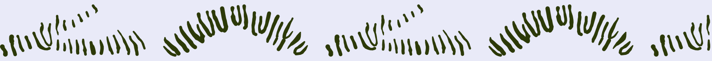
f026 fine hatching · fine-hatching-05 · shift · gap 0.12 · none · ink · f57-c11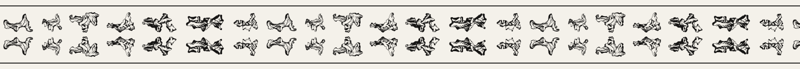
f027 motif features.21__c38 (6 siblings) · stack · gap 0.06 · hair · plain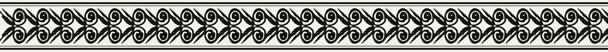
f028 loop · loop-10 · stack2 · gap -0.18 · double · plain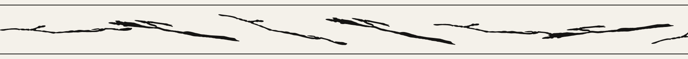
f029 straight sprig · straight-sprig-06 · drift · gap -0.18 · hair · plain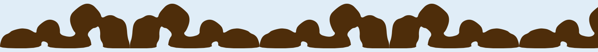
f030 curved band · curved-band-04 · mirror · gap 0.0 · none · ink · f32-c58f031 motif features.21__c91 (6 siblings) · turn · gap 0.18 · none · ink · f520-c334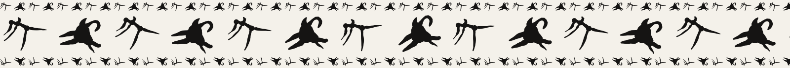
f032 curved branching line · curved-branching-line-01 · drift · gap 0.12 · counter · plain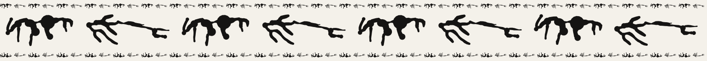
f033 wavy comb · wavy-comb-03 · shift · gap 0.0 · counter · plain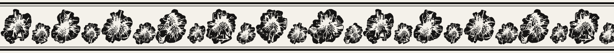
f034 motif features.24__c27 (6 siblings) · pulse · gap -0.04 · double · plain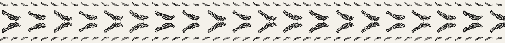
f035 motif features.21__c52 (5 siblings) · stack · gap 0.18 · counter · plain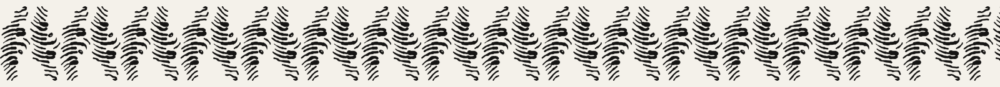
f036 fine crosshatching · fine-crosshatching-11 · glide · gap 0.0 · none · plain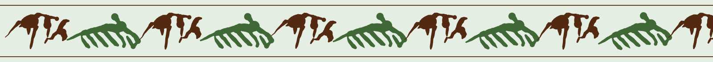
f037 curved feather · curved-feather-05 · mirror · gap -0.18 · hair · two · f50-c451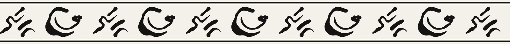
f038 fine wavy hatching · fine-wavy-hatching-11 · glide · gap 0.3 · double · plain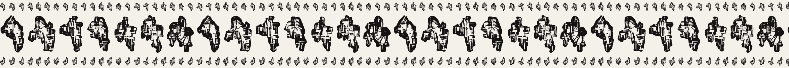
f039 motif features.21__c118 (6 siblings) · shift · gap 0.06 · counter · plain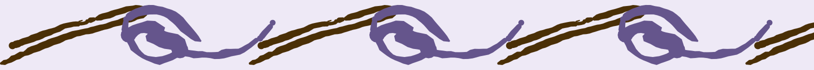
f040 loop · loop-01 · turn · gap -0.18 · none · two · f32-c97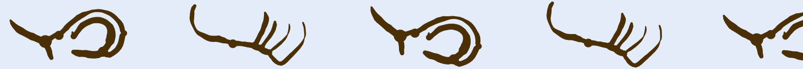
f041 curved sprig · curved-sprig-10 · drift · gap 0.3 · none · ink · f520-c334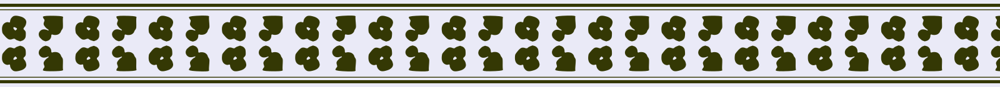
f042 curved band · curved-band-09 · stack2 · gap 0.3 · double · ink · f516-c361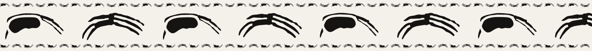
f043 straight branching line · straight-branching-line-05 · turn · gap 0.12 · counter · plain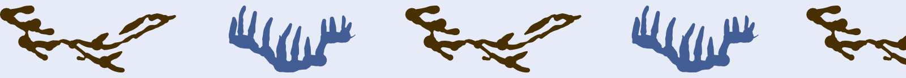
f044 wavy comb · wavy-comb-11 · glide · gap 0.3 · none · two · f524-c51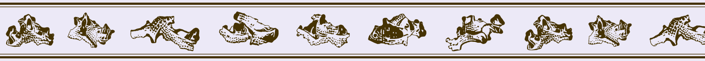
f045 motif features.24__c11 (6 siblings) · drift · gap 0.06 · double · ink · f71-c296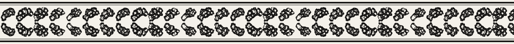
f046 motif features.21__c70 (6 siblings) · stack · gap -0.04 · double · plain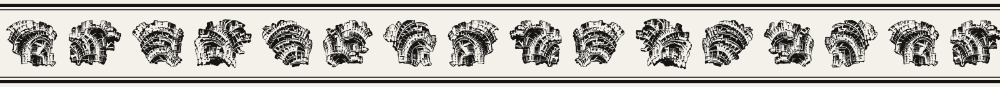
f047 motif features.21__c40 (6 siblings) · mirror · gap -0.04 · double · plain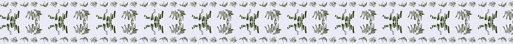
f048 fine crosshatching · fine-crosshatching-05 · stack · gap 0.3 · counter · ink · f514-c486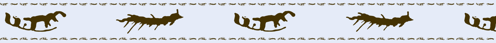
f049 straight feather · straight-feather-02 · shift · gap 0.55 · counter · ink · f510-c250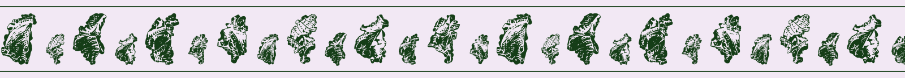
f050 motif features.28__c28 (6 siblings) · pulse · gap 0.18 · hair · ink · f12-c108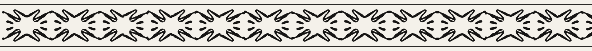
f051 fine wavy hatching · fine-wavy-hatching-07 · stack2 · gap -0.18 · hair · plain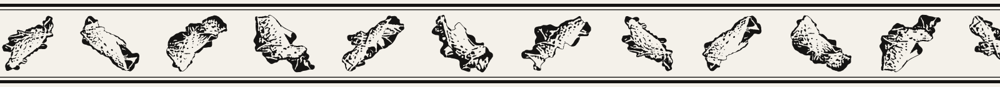
f052 motif features.24__c15 (6 siblings) · glide · gap 0.4 · double · plainf053 motif features.19__c73 (6 siblings) · glide · gap 0.4 · hair · ink · f32-c58f054 loop · loop-00 · turn · gap -0.18 · counter · plainf055 motif features.24__c121 (6 siblings) · drift · gap -0.04 · double · plainf056 motif features.24__c114 (6 siblings) · glide · gap 0.4 · none · ink · f32-c97f057 motif features.24__c82 (6 siblings) · pulse · gap -0.04 · counter · ink · f58-c302f058 motif features.24__c113 (5 siblings) · stack · gap -0.04 · counter · plainf059 motif features.19__c95 (6 siblings) · stack2 · gap 0.4 · none · reverse · f519-c304f060 straight sprig · straight-sprig-03 · glide · gap -0.18 · hair · two · f10-c60f061 motif features.24__c66 (6 siblings) · stack2 · gap 0.06 · counter · two · f31-c254f062 motif features.24__c51 (0 siblings) · stack · gap 0.06 · none · plainf063 lobed wavy band · lobed-wavy-band-02 · stack2 · gap 0.3 · none · plainf064 motif features.24__c154 (6 siblings) · pulse · gap 0.06 · counter · plainf065 motif features.21__c33 (0 siblings) · stack · gap 0.4 · hair · plainf066 curved branching line · curved-branching-line-08 · pulse · gap 0.3 · double · plainf067 motif features.24__c100 (0 siblings) · turn · gap 0.06 · hair · plainf068 motif features.21__c38 (6 siblings) · turn · gap -0.04 · hair · plainf069 curved comb · curved-comb-02 · glide · gap 0.3 · none · ink · f512-c250f070 motif features.21__c77 (6 siblings) · turn · gap 0.4 · none · ink · f519-c181f071 fine crosshatching · fine-crosshatching-09 · shift · gap -0.18 · hair · plainf072 curved feather · curved-feather-04 · drift · gap -0.18 · none · ink · f514-c113f073 hatching · hatching-05 · drift · gap 0.55 · double · plainf074 motif features.24__c86 (6 siblings) · mirror · gap 0.4 · none · ink · f512-c190f075 loop · loop-04 · shift · gap 0.3 · hair · two · f524-c249f076 curved sprig · curved-sprig-06 · stack · gap 0.0 · counter · plainf077 lobed wavy band · lobed-wavy-band-06 · glide · gap -0.06 · none · reverse · f512-c190f078 curved branching line · curved-branching-line-04 · drift · gap -0.06 · none · plainf079 curved comb · curved-comb-04 · turn · gap 0.0 · none · plainf080 motif features.21__c118 (6 siblings) · turn · gap 0.4 · none · two · f72-c889f081 fine crosshatching · fine-crosshatching-01 · drift · gap 0.12 · counter · plainf082 straight feather · straight-feather-00 · drift · gap 0.12 · none · two · f30-c85f083 motif features.19__c89 (6 siblings) · pulse · gap 0.18 · none · reverse · f58-c211f084 motif features.19__c74 (6 siblings) · stack · gap 0.18 · hair · ink · f514-c113f085 motif features.24__c115 (0 siblings) · stack · gap 0.4 · counter · ink · f516-c48f086 fine hatching · fine-hatching-08 · shift · gap -0.06 · counter · plainf087 motif features.21__c70 (6 siblings) · stack · gap 0.4 · counter · plainf088 loop · loop-05 · stack · gap 0.3 · none · on its side · plainf089 straight sprig · straight-sprig-10 · shift · gap -0.06 · double · plainf090 curved band · curved-band-01 · drift · gap -0.06 · counter · ink · f520-c334f091 motif features.28__c28 (6 siblings) · stack · gap 0.06 · double · plainf092 wavy branching line · wavy-branching-line-09 · turn · gap 0.3 · none · two · f525-c378f093 wavy comb · wavy-comb-02 · glide · gap 0.12 · hair · reverse · f526-c78f094 crosshatching · crosshatching-05 · stack · gap -0.06 · double · reverse · f57-c465f095 motif features.21__c84 (6 siblings) · turn · gap 0.06 · double · plainf096 straight feather · straight-feather-11 · mirror · gap -0.18 · none · plainf097 hatching · hatching-02 · drift · gap -0.06 · double · reverse · f51-c484f098 loop · loop-06 · shift · gap 0.55 · counter · plainf099 wavy sprig · wavy-sprig-09 · mirror · gap 0.3 · counter · plainf100 curved band · curved-band-05 · shift · gap 0.55 · none · two · f32-c58f101 motif features.24__c57 (6 siblings) · shift · gap 0.06 · double · plainf102 curved branching line · curved-branching-line-02 · mirror · gap -0.18 · double · plainf103 motif features.24__c51 (0 siblings) · stack · gap 0.18 · none · ink · f58-c211f104 wavy comb · wavy-comb-10 · glide · gap 0.0 · none · plainf105 crosshatching · crosshatching-10 · stack2 · gap -0.06 · none · plainf106 wavy feather · wavy-feather-01 · mirror · gap -0.06 · double · reverse · f519-c181f107 motif features.24__c63 (3 siblings) · drift · gap 0.06 · none · two · f10-c100f108 wavy hatching · wavy-hatching-00 · glide · gap 0.55 · hair · two · f516-c361f109 motif features.21__c38 (6 siblings) · stack2 · gap 0.18 · none · two · f516-c353f110 motif features.19__c117 (6 siblings) · drift · gap -0.04 · none · reverse · f519-c181f111 motif features.21__c77 (6 siblings) · drift · gap 0.4 · hair · ink · f526-c78f112 motif features.21__c78 (6 siblings) · turn · gap -0.04 · hair · plainf113 motif features.21__c91 (6 siblings) · mirror · gap 0.4 · none · ink · f54-c136f114 loop · loop-02 · pulse · gap 0.3 · counter · reverse · f513-c127f115 motif features.24__c86 (6 siblings) · turn · gap 0.18 · double · reverse · f72-c889f116 curved sprig · curved-sprig-04 · drift · gap -0.18 · double · plainf117 hatched blob · hatched-blob-06 · drift · gap 0.3 · double · plainf118 straight branching line · straight-branching-line-02 · glide · gap 0.55 · none · two · f516-c48f119 curved comb · curved-comb-11 · drift · gap 0.12 · counter · plainf120 motif features.21__c54 (6 siblings) · stack2 · gap 0.18 · none · plainf121 motif features.21__c118 (6 siblings) · turn · gap 0.4 · counter · ink · f50-c451f122 motif features.24__c114 (6 siblings) · pulse · gap 0.18 · double · ink · f10-c69f123 motif features.24__c35 (6 siblings) · pulse · gap 0.4 · none · plainf124 crosshatching · crosshatching-09 · glide · gap -0.06 · none · reverse · f524-c249f125 wavy feather · wavy-feather-09 · pulse · gap 0.12 · none · ink · f57-c477f126 motif features.24__c115 (0 siblings) · turn · gap 0.18 · hair · plainf127 motif features.24__c11 (6 siblings) · drift · gap 0.18 · none · ink · f524-c51f128 hatching · hatching-00 · mirror · gap -0.06 · counter · plainf129 motif features.21__c40 (6 siblings) · stack2 · gap 0.4 · hair · plainf130 motif features.21__c18 (6 siblings) · turn · gap 0.4 · hair · two · f52-c253f131 loop · loop-07 · mirror · gap 0.12 · none · two · f55-c394f132 wavy sprig · wavy-sprig-08 · shift · gap 0.55 · none · ink · f57-c465f133 motif features.21__c30 (6 siblings) · drift · gap 0.06 · none · two · f51-c479f134 hatched blob · hatched-blob-04 · drift · gap -0.06 · none · plainf135 wavy branching line · wavy-branching-line-11 · shift · gap -0.18 · double · reverse · f54-c136f136 motif features.21__c84 (6 siblings) · pulse · gap 0.06 · double · plainf137 motif features.24__c121 (6 siblings) · drift · gap 0.18 · double · plainf138 curved comb · curved-comb-06 · turn · gap 0.3 · double · plainf139 crosshatching · crosshatching-06 · glide · gap 0.0 · none · plainf140 motif features.24__c113 (5 siblings) · drift · gap 0.18 · hair · ink · f50-c451f141 curved feather · curved-feather-02 · glide · gap 0.3 · hair · ink · f71-c296f142 fine wavy hatching · fine-wavy-hatching-09 · pulse · gap 0.3 · none · plainf143 motif features.24__c66 (6 siblings) · pulse · gap 0.18 · double · plainf144 motif features.24__c51 (0 siblings) · mirror · gap 0.4 · double · two · f71-c296f145 motif features.21__c106 (2 siblings) · drift · gap 0.18 · double · on its side · plainf146 loop · loop-11 · turn · gap 0.0 · none · plainf147 wavy sprig · wavy-sprig-10 · shift · gap 0.55 · none · plainf148 motif features.24__c63 (3 siblings) · stack · gap 0.06 · hair · plainf149 hatched blob · hatched-blob-01 · glide · gap -0.18 · double · plainf150 curved branching line · curved-branching-line-03 · stack · gap 0.12 · none · ink · f31-c254f151 motif features.19__c117 (6 siblings) · turn · gap 0.4 · none · reverse · f52-c189f152 motif features.21__c77 (6 siblings) · pulse · gap -0.04 · hair · plainf153 motif features.21__c78 (6 siblings) · shift · gap 0.06 · hair · two · f57-c477f154 straight comb · straight-comb-01 · glide · gap -0.18 · none · reverse · f59-c308f155 motif features.24__c119 (3 siblings) · turn · gap -0.04 · none · plainf156 motif features.24__c86 (6 siblings) · glide · gap -0.04 · double · two · f525-c343f157 motif features.24__c27 (6 siblings) · mirror · gap 0.4 · counter · two · f72-c889f158 crosshatching · crosshatching-00 · drift · gap -0.18 · none · plainf159 motif features.24__c141 (6 siblings) · stack2 · gap 0.06 · double · plainf160 motif features.24__c65 (5 siblings) · glide · gap 0.06 · double · plainf161 motif features.21__c54 (6 siblings) · mirror · gap 0.18 · counter · plainf162 motif features.21__c118 (6 siblings) · turn · gap -0.04 · none · reverse · f515-c411f163 straight feather · straight-feather-08 · drift · gap 0.55 · none · two · f53-c136f164 fine hatching · fine-hatching-11 · stack2 · gap 0.55 · none · two · f31-c254f165 motif features.19__c89 (6 siblings) · pulse · gap 0.4 · counter · plainf166 loop · loop-03 · turn · gap 0.12 · counter · reverse · f11-c11f167 motif features.24__c115 (0 siblings) · drift · gap 0.06 · hair · plainf168 motif features.24__c11 (6 siblings) · mirror · gap 0.4 · none · ink · f10-c69f169 motif features.21__c70 (6 siblings) · pulse · gap 0.18 · counter · ink · f516-c353f170 straight sprig · straight-sprig-01 · mirror · gap 0.12 · hair · plainf171 motif features.21__c18 (6 siblings) · pulse · gap 0.06 · hair · plainf172 curved band · curved-band-07 · mirror · gap -0.18 · none · ink · f521-c151f173 wavy branching line · wavy-branching-line-07 · mirror · gap 0.0 · counter · ink · f54-c100f174 straight comb · straight-comb-02 · pulse · gap -0.18 · double · plainf175 crosshatching · crosshatching-07 · stack2 · gap 0.55 · double · plainf176 curved feather · curved-feather-03 · turn · gap 0.12 · none · plainf177 fine wavy hatching · fine-wavy-hatching-05 · drift · gap -0.06 · none · ink · f51-c479f178 loop · loop-09 · turn · gap -0.06 · double · plainf179 straight sprig · straight-sprig-02 · mirror · gap 0.12 · none · reverse · f72-c889f180 hatched blob · hatched-blob-08 · stack · gap 0.3 · none · two · f523-c330f181 curved branching line · curved-branching-line-00 · drift · gap 0.0 · counter · two · f31-c228f182 motif features.19__c95 (6 siblings) · shift · gap 0.4 · none · two · f523-c402f183 motif features.24__c57 (6 siblings) · glide · gap 0.4 · none · plainf184 motif features.24__c66 (6 siblings) · shift · gap 0.18 · none · plainf185 motif features.24__c51 (0 siblings) · stack · gap -0.04 · counter · plainf186 motif features.21__c106 (2 siblings) · glide · gap 0.06 · counter · plainf187 curved comb · curved-comb-08 · pulse · gap 0.55 · hair · two · f71-c296f188 crosshatching · crosshatching-01 · turn · gap 0.0 · none · ink · f511-c403f189 motif features.24__c63 (3 siblings) · stack · gap 0.4 · counter · plainf190 motif features.24__c100 (0 siblings) · stack2 · gap 0.18 · none · plainf191 straight feather · straight-feather-10 · mirror · gap -0.18 · none · plainf192 motif features.19__c117 (6 siblings) · drift · gap 0.06 · none · ink · f524-c51f193 motif features.21__c77 (6 siblings) · pulse · gap 0.06 · counter · plainf194 fine wavy hatching · fine-wavy-hatching-03 · pulse · gap -0.18 · none · two · f10-c69f195 motif features.21__c91 (6 siblings) · stack2 · gap 0.06 · none · reverse · f12-c108f196 motif features.24__c119 (3 siblings) · stack2 · gap 0.18 · none · reverse · f54-c100f197 loop · loop-08 · pulse · gap 0.3 · none · two · f72-c298f198 wavy sprig · wavy-sprig-07 · glide · gap 0.0 · counter · plainf199 curved band · curved-band-03 · shift · gap 0.12 · hair · plain